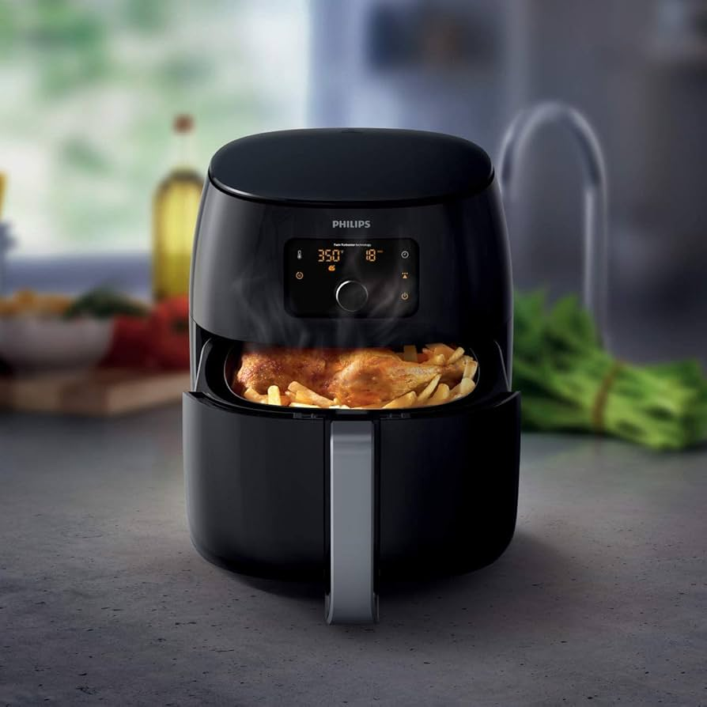

A airfryer já está incorporada no cotidiano da maioria das pessoas, devido à sua praticidade, e por ela permitir
preparar receitas sem o uso do óleo. Entretanto, algumas práticas podem atrapalhar o resultado da receita e até
causar danos à saúde.
Confira as ações que devem ser evitadas abaixo:

A airfryer funciona através da circulação de ar quente. Quando a cesta fica muito cheia, não circula de maneira
adequada, o que resulta em alimentos cozidos de forma irregular, sem crocância e
até partes queimadas enquanto
as outras permanecem cruas.
Devido a isso, o recomendado é preencher, no máximo, até metade da cesta, e
durante o preparo, sacudir levemente para misturar os alimentos e garantir um resultado uniforme.
Alimentamos com excesso de água ou líquido não são recomendados na airfryer, pois ao pingar podem obstruir
os furos da cesta, e enquanto a água evapora o alimento acaba sendo cozido e não dourado, resultando em uma
consistência mole e sem crocância.
Portanto, caso vá preparar algum alimento que tenha muita água em sua composição, o recomendado é secá-lo
bem para evitar resultados indesejáveis
Muitas pessoas utilizam o papel manteiga para evitar que a airfryer fique suja, porém se for mal utilizado, compromete
o preparo dos alimentos. Se for
mal posicionado bloqueia a circulação de ar, deixa a comida menos crocante e ainda
pode girar dentro da cesta, encostando na resistência.
Caso vá utilizar, coloque o papel junto com o alimento e nunca o deixe sozinho na cesta durante o pré aquecimento.
Utilizar o papel alumínio causa problemas similares ao uso do papel manteiga, por dificultar a circulação do ar,
e
potencialmente superaquecer e até encostar na resistência da airfryer.
Acrescido com isso, ele não deve ser usado com alimentos ácidos, como limão, tomate e vinagre, muito salgados
ou em conserva ,
pois todos esses alimentos podem reagir com o alumínio e contaminar o alimento.
O indicado é evitar o uso do papel alumínio sempre que possível.
Alimentos que contém muito amido em sua composição, como batata frita, pães, empanados e nuggets, se preparados
em temperaturas
muito altas, podem formar a substância acrilamida, que é prejudicial à saúde.
Portanto, é preferível deixar esses alimentos dourados, não queimados, deixando na menor temperatura possível e
apenas no tempo necessário.
Não limpar com regularidade a airfryer é um erro extremamente perigoso. Os resíduos antigos podem queimar, soltar
fumaça, alterar o sabor da comida, danificar o aparelho e ainda corrobora a formação de gorduras prejudiciais à saúde.
Fazer carne mal passada na airfryer pode gerar danos à saúde.O ideal é que ela atinja pelo menos 70 ºC por dois minutos.
Caso não tenha termômetro em casa, alguns sinais podem contribuir para verificar se o alimento está bem cozido, eles são: